Agentic Endpoint Security (AES)
Hands-on Workshop
Lab Guide: As a developer, see how risky software is blocked at install time. As a SOC admin, manage the controls behind it.
About the Workshop
In this workshop you will use Agentic Endpoint Security (AES) in two different roles. In the Developer role, you will see what happens when you try to install a risky extension or package. In the SOC admin role, you will review and manage the console settings that enforce these blocks.
Scenario: You work on the security team of Boğaziçi Teknoloji A.Ş., a fictional company. EDR is running and there are no alerts. However, over the last six months developers have started installing AI coding agents, VS Code and browser extensions, and MCP servers on their own. Management wants answers to these questions: "What is installed on our machines, what do these tools have access to, and can we block something risky when someone tries to install it?"
| Role | Where | What they do |
|---|---|---|
| DEVELOPER | Lab machine (RDP) | Installs extensions and packages, sends approval requests for blocked installs |
| SOC ADMIN | AES console (browser) | Reviews inventory and risks, manages policies, evaluates approval requests, starts remediation |
Each participant works alone and takes on both roles. Every participant gets a lab machine and their own endpoint group in the AES console. The AI agent example at the end of Section 8 is shown live by the instructor.
| # | Section | Role |
|---|---|---|
| 0 | Preparation | DEVELOPER + SOC ADMIN |
| 1 | Safe extension installation | DEVELOPER |
| 2 | Risky extension and Request Approval | DEVELOPER → SOC ADMIN |
| 3 | Blocking an npm package | DEVELOPER |
| 4 | Inventory: Shadow AI discovery | SOC ADMIN |
| 5 | Risk analysis | SOC ADMIN |
| 6 | Guardrails, policies and Impact Check | SOC ADMIN |
| 7 | Remediation | SOC ADMIN → DEVELOPER |
| 8 | Runtime: AI coding agent | SOC ADMIN + Demo |
| 9 | Threat Intel: Threat Center | SOC ADMIN |
| 10 | Wrap-up |
0. Preparation
In this section you will connect to your lab machine, sign in to the AES console, and configure the certificate and proxy settings needed to route marketplace traffic through AES by following the steps in the AES console yourself.
0.1 Lab machine
- DEVELOPER Connect to the lab machine using the RDP address and user credentials provided to you.
- DEVELOPER Open Proje Terminali (Project Terminal) on the desktop and note the machine's hostname. You will find your machine in the console by this name.
hostname- DEVELOPER Check that the AES service is running. All commands in this guide are also in the komutlar.txt file on the desktop:
Get-Service | Where-Object { $_.DisplayName -like "*Koi*" }The service status should be Running.
NoteAES is not installed on the endpoint as a traditional agent. It runs as a readable script package and collects inventory at regular intervals. You can open the script and review its contents if you like.
0.2 Signing in to the AES console
- SOC ADMIN In Chrome, open Webmail from the AES Workshop folder on the bookmarks bar (
webmail.torsque.com). Sign in with the workshop email address assigned to you (e.g.student1@torsque.com) and the password. - SOC ADMIN Open AES Konsol (AES Console) in a new tab. You can use the AES Workshop folder or the shortcut on the desktop. Choose the email sign-in option instead of SSO and enter the same workshop email address.
- SOC ADMIN Go back to the Webmail tab. Click the link in the verification email from AES and wait for the console to open.
After you sign in, the Dashboard opens. It summarizes the environment: detected malware, open remediations and approval requests, total items and endpoints, item type and platform distribution, risk levels, and items that AES blocked automatically.
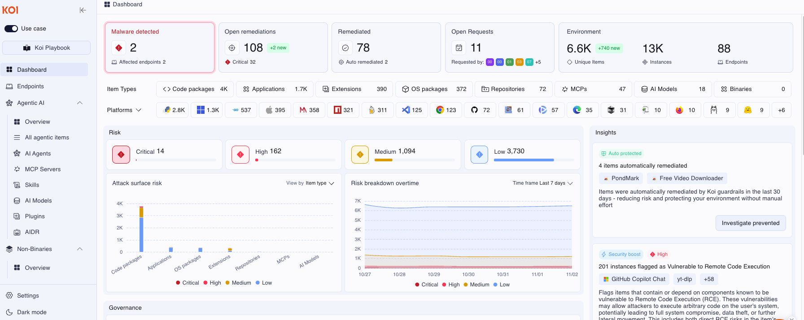
- SOC ADMIN Find your machine in the endpoint list by its hostname.
- SOC ADMIN Check that your machine is assigned to your own group (e.g.
AES-USER01). The policies you create during the workshop apply only to this group and do not affect other participants.
NoteEach participant has a different workshop email address; use only the one assigned to you. If the verification email does not arrive within a few minutes, check the spam folder in webmail.
0.3 Network Routing: certificate and proxy setup
Traffic to marketplaces such as the Chrome Web Store and VS Code Marketplace is routed to the AES proxy with a PAC file. For the proxy to inspect this traffic, the machine must trust the AES Root CA certificate. You will get the certificate and the PAC file address from the AES console.
The diagram below summarizes how AES works. Marketplace traffic from endpoints passes through the AES proxy and is allowed or blocked based on the policies on the platform; all other traffic goes directly to the internet. The AES script on the endpoint sends inventory to the platform, and the risk pipeline scans the marketplaces and sends risk results to the platform. The SOC admin monitors and manages all of this from the console.
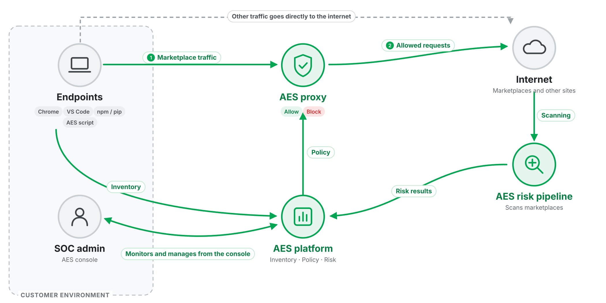
- SOC ADMIN In the console, click Settings at the bottom left and select Deployment under Workspace. On the Network Routing card, click Update Deployment.

- SOC ADMIN The window that opens shows three steps on the left: Set up network integration, Establish network trust and Route network traffic. The first step selects how marketplace traffic is routed to AES. In this workshop, select PAC file and click Next.

The lab uses a PAC file because there is no separate proxy or SWG solution in the lab environment. In real environments, marketplace traffic can also be routed to AES through the organization's existing SASE/SWG solution:
| Method | How it works |
|---|---|
| PAC file | Marketplace domains are routed to the AES proxy with a PAC file. The PAC file can be used on its own or merged into an existing PAC file, and is distributed manually, with the AES script package, or through MDM. |
| Prisma Access | The PAC file is distributed through the Prisma Access forwarding profile in GlobalProtect Tunnel + Proxy or Proxy (Explicit Proxy) mode. |
| GlobalProtect | If GlobalProtect runs in Tunnel-only mode, the PAC file is distributed to endpoints separately. |
| Zscaler – Proxy Chaining | A forwarding rule is defined in Zscaler ZIA, and marketplace domains are forwarded to the AES proxy with proxy chaining. |
| Netskope – Proxy Chaining | Netskope SWG stays in the traffic path and forwards marketplace domains to AES as an upstream proxy. |
| Netskope – Bypass | Marketplace domains are excluded from Netskope steering rules and routed directly to the AES proxy with a PAC file. |
| BlueCoat | Forwarding rules are defined in Symantec ProxySG, and marketplace traffic is forwarded to AES with proxy chaining. |
| Cloudflare | In Cloudflare Zero Trust, marketplace domains are routed to the AES proxy with a DNS override or an egress policy. |
| Cisco Umbrella | Marketplace domains are defined as External Domains in Umbrella and excluded from the SWG; a PAC file uploaded to Umbrella sends this traffic to AES. |
| Fortinet | FortiGate forwards marketplace traffic to the AES proxy with proxy chaining or explicit proxy. |
NoteSWG/SASE integrations usually use the Trust via Customer CA (CSR) method for the certificate: the CSR provided by AES is signed with the organization's own root CA, so no additional certificate needs to be distributed to endpoints.
Certificate
- SOC ADMIN In the Establish network trust step, check that Quick Trust via Koi Root CA is selected.
- SOC ADMIN In the Download the Koi Root CA step on the right, click Download CA. The certificate file is saved to the Downloads folder. Then click Next to go to the Deploy the certificate in your environment step; in this step you will install the certificate on the machine.
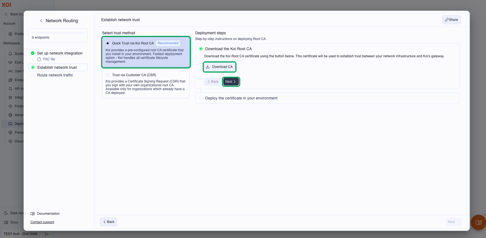
- DEVELOPER Open Proje Terminali (Project Terminal) on the desktop. Use the commands below to add the downloaded certificate to the Trusted Root Certification Authorities store of your own user (aes-user). Administrator rights are not required:
$ca = Get-ChildItem "$env:USERPROFILE\Downloads\*" -Include *.pem,*.crt,*.cer | Sort-Object LastWriteTime -Descending | Select-Object -First 1certutil -user -addstore -f Root $ca.FullNameWindows shows a warning asking whether you want to install the certificate; click Yes. The last line of the output should say CertUtil: -addstore command completed successfully.
- DEVELOPER Check that the certificate was added. With a command: run the commands below in the same terminal window:
$t = (New-Object System.Security.Cryptography.X509Certificates.X509Certificate2 $ca.FullName).ThumbprintGet-ChildItem Cert:\CurrentUser\Root | Where-Object Thumbprint -eq $tThe output should list the certificate's Thumbprint and Subject. If the output is empty, the certificate was not added.
- DEVELOPER Manually: press Win + R, type
certmgr.mscand press Enter. Open the Trusted Root Certification Authorities → Certificates folder and find the Koi certificate in the list.
Proxy (PAC file)
- SOC ADMIN In the console, click Next to go to the Route network traffic step. Read the Before You Begin section: the PAC file only routes marketplace traffic from the browser. npm and pip do not use the PAC setting; on the lab machine, these two tools are already routed to the AES gateway.

- SOC ADMIN In the Choose a Deployment Method section, copy the PAC file address with the copy icon on the right. In this workshop you will use the Manual method.

- DEVELOPER Follow the Windows steps in the Deploy the PAC File section on the lab machine:
- Open Settings → Network & Internet → Proxy.
- Turn on Use setup script, paste the PAC address you copied into the Script address field and click Save.

- DEVELOPER Close Chrome completely, reopen it and go to the address below:
https://marketplace.visualstudio.com/koiThe AES verification page that says You Are Routing Through Koi! appears. Your marketplace traffic now passes through AES.
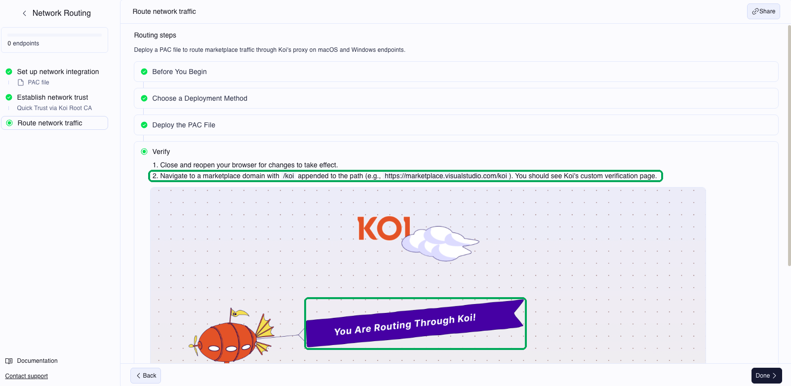
- SOC ADMIN In the console, click Done to complete the Network Routing steps.
NoteIf the normal marketplace page opens instead of the verification page, check the PAC address and make sure you closed and reopened Chrome completely. If you get a certificate error, check that the certificate was added to the Trusted Root store.
The AES service is running, your machine appears in your own group in the console, and your marketplace traffic passes through AES.
1. End-User Experience: Safe Installation
AES does not block every extension. Extensions that stay below the risk threshold set by the organization and do not look problematic in AES threat intelligence install normally.
- DEVELOPER Open Chrome on the lab machine and go to the Chrome Web Store.
- DEVELOPER Search for a widely used, trusted extension. For example, a tab manager with hundreds of thousands of users.
- DEVELOPER Click Add to Chrome and complete the installation.
The extension installs normally. There is no warning, approval screen or wait.
2. End-User Experience: Risky Extension and Request Approval
When someone tries to install an extension that does not comply with the organization's policy, AES blocks the installation on the marketplace page. At that point the user can request approval from the security team. In this section you will see two different blocking examples: an extension flagged as malware and an extension blocked by organization policy.
2.1 Extension flagged as malware
- DEVELOPER Search for the extension below in the Chrome Web Store and open its page:
Hulu Ad Skipper | Ad Blocker [QVI]A Request Approval button appears in place of the Add to Chrome button. Because AES flags this extension as malware, the Malware Protection guardrail blocks the installation.
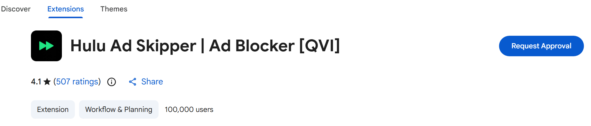
- DEVELOPER Click Request Approval.
No request is created and the following warning appears at the bottom left of the screen: "This item can't be approved due to malicious activity. For assistance, contact the security team." The extension cannot be sent for approval because it is recorded as malware in the AES threat intelligence database.
2.2 Extension blocked by policy
- DEVELOPER Search for the extension below in the Chrome Web Store and open its page:
Checker Plus for GmailOn this page too, a Request Approval button appears instead of Add to Chrome. This extension is not malicious; it is blocked because it is on the organization's global block list.
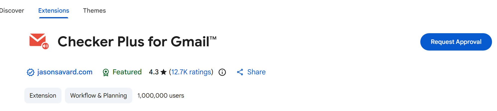
- DEVELOPER Click Request Approval. Enter the text below in the Business justification field and your workshop email address in the email field, then submit the request:
Needed to keep track of Gmail notifications.- SOC ADMIN In the AES console, go to Operations → Requests.
- SOC ADMIN Find the request you submitted. You can see the requester, the extension, the justification and the email address.
- SOC ADMIN Evaluate the request. You can approve it, or reject it by entering a reason.
NoteApproval requests can also be sent to ticketing systems such as Jira or ServiceNow, so requests are handled in the security team's existing process.
NoteThis flow works because of the proxy and certificate setup you completed in Section 0.3. If marketplace traffic does not pass through the AES proxy, the installation is not blocked.
3. Code Package Prevention: npm
Developers and AI coding agents install packages in seconds, often without asking anyone. Supply chain attacks such as Shai-Hulud took advantage of this. In this section you will see how AES stops a blocked package before it is downloaded to the machine.
- DEVELOPER Open Proje Terminali (Project Terminal) on the desktop. The terminal opens in the
C:\Projeler\bogazici-webfolder. - DEVELOPER First, install an allowed package:
npm install chalkThe package installs normally.

- DEVELOPER Then try to install the package blocked by policy:
npm install buttoncontentThe installation stops with a 403 error. The terminal shows the reason for the block (POLICY: Blocklist) and a REQUEST APPROVAL link the developer can use to request access.
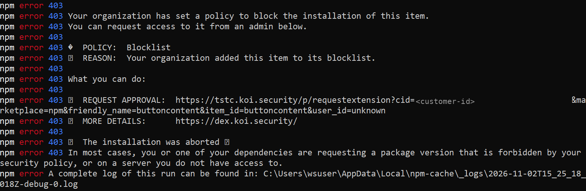
- DEVELOPER Check that the package was not downloaded to the machine:
Test-Path .\node_modules\buttoncontentThe result should be False.
NotePackage requests are checked at the AES proxy before they reach the public registry. A blocked package is blocked even when it is pulled in as a dependency of another package.
4. Inventory: Shadow AI Discovery
EDR monitors binaries running on the operating system. However, it cannot see the extensions, packages, MCP servers and AI agents running inside those binaries individually. From this section on, you will work in the SOC admin role.
- SOC ADMIN In the AES console, go to Non-Binaries → Extensions in the left menu. This page lists extensions across all endpoints. The top of the page shows extension counts by platform (Chrome, VS Code, Cursor, Edge, etc.).
- SOC ADMIN Filter the list to your own machine in the Query Builder: select Endpoint as the field and contains as the condition, enter your hostname (e.g.
AES-USER01) as the value and click Run.

- SOC ADMIN Review the columns in the list: Risk level, Governed by (the policy or list applied to the item), Version, Publisher, Marketplace, Platform and Endpoints (the number of machines the item is installed on).
NoteYou can use multiple conditions in the Query Builder. With + Add Condition you can add conditions on fields such as risk level, publisher, marketplace or platform, and with + Group you can group conditions. You can save queries you use often.
- SOC ADMIN On the Agentic AI → AI Agents page, find Claude Code and Codex. These tools are installed on the machine but are not recorded in any other security tool. Review the risk level, item types and findings columns.

- SOC ADMIN On the Agentic AI → MCP Servers page, open the
@modelcontextprotocol/server-filesystemserver. In the Supply chain graph, review which applications (Claude, Cursor) the server is connected to and how many endpoints it is installed on, and in the MCP Components tab, which folder it accesses.
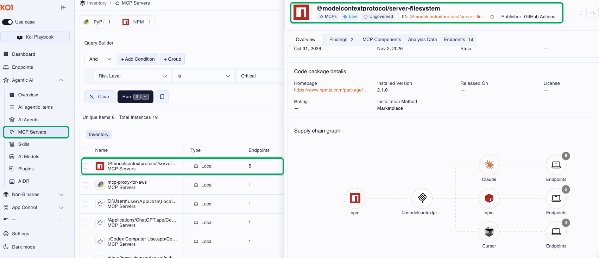
- SOC ADMIN On the Non-Binaries → Code Packages page, search for the
chalkpackage you installed in Section 3: in the Query Builder select Display Name / contains /chalkand click Run.

The inventory is listed by category. The chalk package appears in the list after the next scan.
NoteInventory is collected by a script that runs at regular intervals, not by a continuously running monitoring tool. It may take a few minutes for a newly installed item to appear in the list.
(OPTIONAL) Click Clear in the Query Builder to remove the endpoint filter and see all participants' machines together. Change the View by option at the top right to Item and check in the Endpoints column how many machines the same item is installed on.
5. Risk Analysis
AES regularly scans marketplaces such as npm, PyPI, Hugging Face, the Chrome Web Store and the VS Code Marketplace. It runs item code in a sandbox and analyzes it with LLM-based analysis. In this section you will review the result of this analysis for a single item.
- SOC ADMIN Go to Endpoints in the left menu and click your machine. In the panel that opens on the right, select the Inventory tab. All items on the machine are sorted by risk level.

- SOC ADMIN Click an extension at the Critical or High level.
- SOC ADMIN Review the risk report and answer the questions below:
- Which permissions does the extension request?
- Who is the publisher and how trustworthy are they?
- Which external services does it communicate with?
- Which finding raises the risk score the most?
The risk report includes the permissions, publisher information and the findings that make up the risk score.
NoteFrom an EDR perspective, this extension is part of a signed, trusted process (Code.exe or chrome.exe). EDR allows this process to run, but cannot see which extension inside the process is doing what.
6. Governance: Guardrails, Custom Policy and Impact Check
The blocks you encountered in Sections 1–3 come from the settings you will see in this section. First you will review the built-in guardrails, then the policies.
6.1 Guardrails
- SOC ADMIN Go to Governance → Guardrails in the left menu.
- SOC ADMIN Find the guardrails below on the page and read their descriptions:
| Guardrail | Description |
|---|---|
| Malware Protection | Blocks the installation of items flagged as malicious by the AES risk engine and automatically removes those already installed. For npm and PyPI it only blocks installation. |
| Scan-First Protection | Does not allow a newly published item to be installed until the AES risk engine scan is complete (usually between a few minutes and a few hours). |
| Version Update Cooldown | Delays updates of installed items to new versions for a set period. The default period is 1 day for npm and 2 days for other marketplaces. |
| Delayed Access | Blocks the installation of newly published items until a set number of days has passed since publication. |
| Delisted Monitoring | Detects items removed (delisted) from the marketplace and lists them on the Remediation page. |
| Sideloading Monitoring | Detects manually installed items that are not available in any marketplace. It does not block these items; it lists them on the Remediation page. |
| MCP Registry Enforcement | Automatically removes MCP servers installed from outside the official GitHub MCP Registry. Currently applies to VS Code. |
| Block Execution from Risky Paths | Blocks running binaries from risky directories the user can write to, such as /tmp (macOS). |
| Agent Credential Access Restriction | Prevents AI coding agents from reading files that contain secrets, such as SSH keys, cloud credentials, API tokens and .env. |
| Agent Destructive Command Restriction | Prevents AI coding agents from running irreversible commands such as rm -rf, DROP DATABASE, terraform destroy and git push --force. |
| Agent Source Code Exfiltration Protection | Prevents AI coding agents from pushing to, cloning, fetching or pulling from git repositories that are not on the approved list. |
- SOC ADMIN Click the settings icon to the right of the Malware Protection row. In the window that opens, review the Alert-only mode, Superior to 'Global allow list' and Endpoints groups settings.
- SOC ADMIN Click Run in the Impact check row. Items installed on endpoints that match the guardrail's criteria are listed.

NoteGuardrails can be applied per endpoint group. Some guardrails can first be turned on in alert-only mode; in this mode nothing is blocked and only alerts are created. Before turning on guardrails such as Malware Protection, Scan-First and Delayed Access, you can use Impact Check to see how many items and endpoints will be affected.
NoteVersion Update Cooldown is an important safeguard against supply chain attacks. When a malicious version of a trusted package is published, AI agents and automatic updates can download it immediately. The waiting period gives the community and the AES risk engine time to detect the malicious version.
6.2 Marketplace Modes and Global Lists
- SOC ADMIN Go to Governance → Policies → App Control in the left menu. At the top of the page are the Marketplaces mode, Policies and Global lists tabs.
- SOC ADMIN On the Marketplaces mode tab, find the block by default setting for marketplaces. When this mode is on, only allowed items can be installed from that marketplace.
- SOC ADMIN Open the Global lists tab. In the Blocklist, find Checker Plus for Gmail (Chrome Web Store), blocked in Section 2.2, and the
buttoncontentpackage (npm), blocked in Section 3.

NoteGlobal lists are applied before custom policies. To block an item across the whole organization you add it to the Blocklist; to always allow it, you add it to the Allowlist.
6.3 Custom Policy and Impact Check
AI Runtime policy
App Control policies determine which items can be installed. AI Runtime policies determine what an installed AI coding agent can do while it runs: which skills and MCP tools it can use, and which actions require the user's approval.
- SOC ADMIN Go to Governance → Policies → AI Runtime in the left menu and click Create policy at the top right.
- SOC ADMIN In the Scope section, select the agents the policy applies to (Cursor, Claude Code, Codex, GitHub Copilot, etc.) in the Agents field, and your own group in the Endpoint groups field.
- SOC ADMIN In the Action section, select the action: Block blocks the action, Ask asks the user for approval first, Allow allows it.
- SOC ADMIN In the Rules section, enter which Skill or MCP tool the rule applies to. You can add a condition with Add condition and a new rule with Add rule.
- SOC ADMIN Before saving the policy, click Run impact check to see its effect.

Templates
- SOC ADMIN On the AI Runtime page, click Templates at the top right.
- SOC ADMIN Filter the templates by action (Ask, Block, High impact) or by category (Secrets & Credentials, Cloud & infra, Destructive actions, Code & repo, etc.). Each template shows the action, the MITRE ATLAS mapping and a short description.
- SOC ADMIN Open and review the Control credential file access template. This template asks the developer for approval when an AI agent wants to read a file that contains credentials, such as
.envor a cloud config.
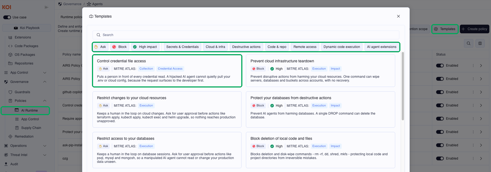
7. Remediation
Blocking new installations is not enough on its own; risky items already installed on machines must also be removed. In this section you will remove a risky item from an endpoint through the console.
- SOC ADMIN Go to Governance → Remediation in the left menu. The page has four tabs: Review (items waiting for review), Pending (items whose removal has started), Remediated (removed items) and Dismissed (ignored items).
- SOC ADMIN On the Review tab, find the items on your own machine by looking at the Hostname column. The Reason column shows which rule or guardrail caused the item to be listed.
- SOC ADMIN Select a high-risk item installed on your machine (e.g. Youtube Unblocked) and click the Remediate button on the right of the row.
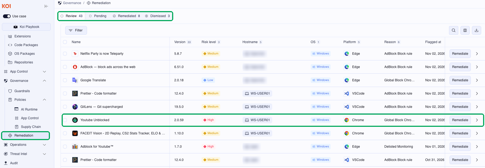
The item's status changes to Pending. The script on the endpoint removes the item the next time it runs, and the status is updated to Remediated.
- DEVELOPER Verify on the lab machine that the item was removed. If the item is a VS Code extension, run the command below and check that it is not in the list:
code --list-extensionsIf it is a browser extension, open chrome://extensions in Chrome.
- SOC ADMIN In the remediation record, check who started the action, on which machine, and for which version.
NoteThe removal happens the next time the script on the endpoint runs. If the item is not removed right away, wait a few minutes.
NoteIf the related guardrails are on, items detected as malicious or removed from the marketplace can be removed automatically.
8. Runtime: AI Coding Agent
AI coding agents run commands, read files and send requests to external services with the user's permissions. AES steps in right before the agent runs a tool (pre-tool hook) and blocks the action or asks the user for approval based on the relevant policy.
- SOC ADMIN Go to Agentic AI → AIDR in the left menu. This page lists AI coding agent sessions and the actions they performed. The top of the page shows session counts by agent (Claude Code, Codex, GitHub Copilot).
- SOC ADMIN Review these columns for each session: Agent, Endpoint, Actions (the types of actions the agent performed: File access, Command, Web access), Governed by (the guardrail or runtime policy applied to the session), Events and Duration.
- SOC ADMIN Click one of the sessions that has a guardrail or policy in the Governed by column. Review the commands the agent tried to run, the files it read and the blocked actions.

Demo: On the lab machine, the instructor will ask an AI agent to read the .env file in the project folder and send a request to an external address with curl. These actions are controlled by the AI Runtime policies you saw in Section 6.3 and by the agent guardrails.
The action is blocked before it runs. The block message appears in the agent's chat window, and the developer can request an exception from there. The session is also listed on the AIDR page.
NoteThe .env file on the lab machine contains only sample values; there is no real password or key.
9. Threat Intel: Threat Center
The AES research team continuously tracks new supply chain attacks that appear in marketplaces. In the Threat Center you can see these threats and whether your environment is affected by them.
- SOC ADMIN Go to Threat Intel → Threat Center in the left menu.
- SOC ADMIN In the Recent active threats detected section, review the most recently detected malicious items. Each card shows the item's name, its publisher and a Malware label.
- SOC ADMIN In the Latest supply chain threats list, review current supply chain attacks. Each entry has a date, title, short description and label (Security update, Flash security update).
- SOC ADMIN In the Any impact status filter at the top right, select Compromised. The list narrows down to threats with affected items in your environment.
- SOC ADMIN Click an entry and review the details of the attack and its impact on your environment.
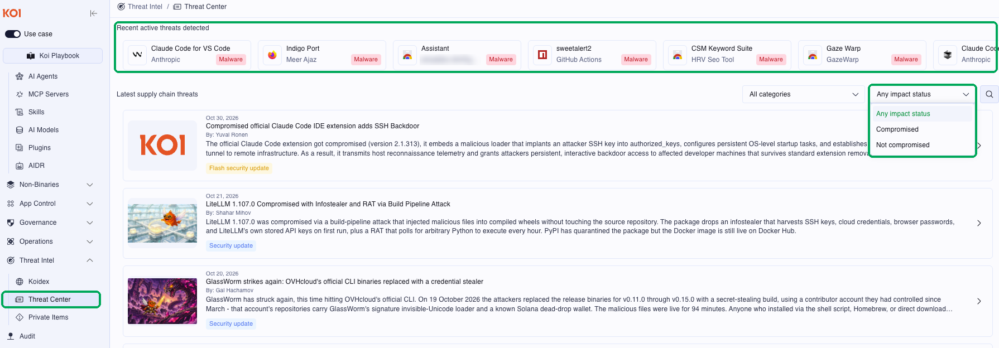
10. Wrap-up
In this workshop you went through the same scenario in two roles. As a developer, you saw risky items blocked at install time and how you can request approval. As a SOC admin, you reviewed what is installed in the environment, the risks involved and the controls in place from a single console.
| Question | Section with the answer |
|---|---|
| What is installed on our machines? | Section 4 – Inventory |
| What do these tools access, and how risky are they? | Section 5 – Risk analysis |
| Can we block something risky when someone tries to install it? | Sections 1–3 and 6 – Prevention at install time |
| How do we remove risky items that are already installed? | Section 7 – Remediation |
| What are AI agents doing? | Section 8 – Runtime |
| Were we affected by a new supply chain attack? | Section 9 – Threat Center |
Integration with your existing environment
- AES does not replace your existing EDR; it monitors the layer of extensions, packages, MCP servers and AI agents that EDR cannot see. It can run standalone alongside your EDR.
- If you use Cortex XDR, AES can be enabled through the XDR agent in XDR + AES or AES only mode.
- Marketplace traffic can be routed to AES through existing SWG solutions such as Prisma Access.
Next step: To see the situation in your own environment, we can plan a two-week PoC with a few developer machines.
Resources
- Agentic Endpoint Security (AES) – Solution Brief
- AES documentation (Cortex Docs)
- Code package prevention documentation
- Securing the Agentic Endpoint (Palo Alto Networks Blog)
- A Quarter of Innovation with Agentic Endpoint Security (Palo Alto Networks Blog)
- Introducing Cortex XDR 6.0: Built for Endpoints. Ready for Agents.